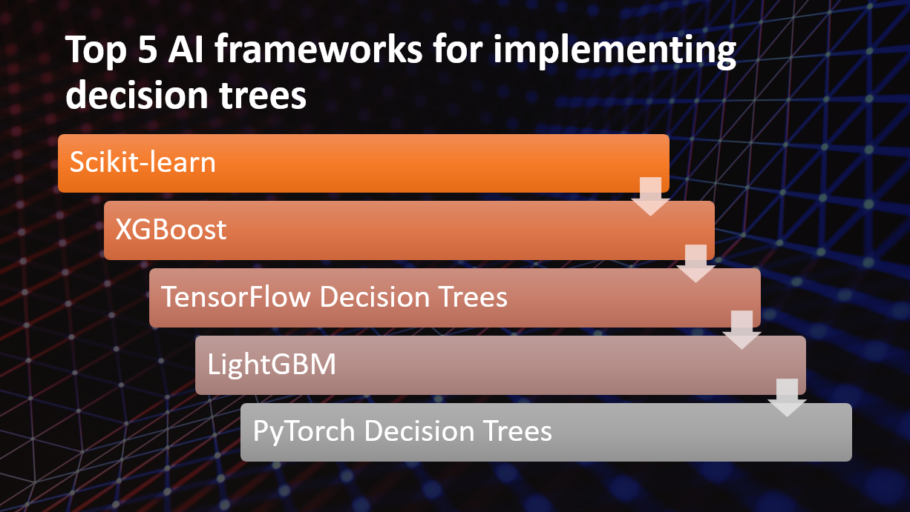

Introduction
Decision trees are powerful tools for solving classification and regression problems in machine learning. They provide a clear and interpretable structure for decision-making based on a set of features and their corresponding outcomes. Artificial Intelligence (AI) frameworks offer efficient implementations of decision trees, enabling developers and data scientists to build robust models. In this blog post, we will explore the top five AI frameworks for implementing decision trees and their contributions to machine learning tasks.
Why use AI frameworks for implementing decision trees
- AI frameworks optimize decision tree algorithms for fast computation.
- AI frameworks offer customization options for tailored decision tree models.
- AI frameworks can handle large datasets and complex decision tree structures.
- AI frameworks provide seamless integration with other machine learning algorithms and pipelines.
- AI frameworks have active user communities for resources and assistance.
Here Are Our Top 5 AI frameworks for implementing decision trees:
1: Scikit-learn
Overview and Importance
Scikit-learn is a widely-used machine learning library in Python that provides a comprehensive set of tools and algorithms for machine learning tasks. It offers a broad range of machine learning algorithms, including classification, regression, clustering, and dimensionality reduction. Scikit-learn is highly regarded in the data science community and is known for its ease of use and extensive functionality.
Learn more about Scikit-learn
Key Features and Capabilities
Diverse Algorithms
- Scikit-learn provides a wide variety of machine learning algorithms, making it suitable for various tasks and domains.
User-Friendly API
- It offers a simple and intuitive API that allows users to easily implement machine learning models and workflows.
Extensive Functionality
- Scikit-learn includes functionalities for data preprocessing, model evaluation, feature selection, and cross-validation, among others.
2: XGBoost
Overview and Importance
XGBoost (eXtreme Gradient Boosting) is a popular open-source machine learning library known for its efficiency and high performance in gradient boosting. It is widely used in various data science competitions and is favored for its ability to handle both regression and classification problems. XGBoost's importance lies in its capability to produce highly accurate models and its versatility in handling diverse datasets.
Learn more about XGBoost
Key Features and Capabilities
Gradient Boosting
- XGBoost utilizes gradient boosting, a powerful ensemble learning technique, to train a sequence of weak models and combine their predictions to form a strong model.
Regularization Techniques
- XGBoost incorporates regularization techniques such as shrinkage (learning rate), column subsampling, and row subsampling to prevent overfitting and improve generalization.
Flexibility
- XGBoost supports various objective functions and evaluation metrics, allowing users to customize the training process based on their specific problem and performance goals.
3: TensorFlow Decision Trees
Overview and Importance
TensorFlow Decision Trees is a component of the TensorFlow ecosystem that focuses on training and deploying decision tree models. Decision trees are widely used in machine learning for both classification and regression tasks due to their interpretability and ability to capture complex relationships. TensorFlow Decision Trees provides a scalable and efficient framework for building decision tree models and integrating them into larger machine learning workflows.
Learn more about TensorFlow Decision Trees
Key Features and Capabilities
Scalability
- Can handle large datasets and is designed for efficient training and inference on massive datasets.
Flexibility
- Supports various types of decision tree models and allows customization of model architecture, hyperparameters, and optimization criteria.
Integration with TensorFlow
- Seamlessly integrates with the TensorFlow ecosystem for combining decision trees with other machine learning techniques.
4: LightGBM
Overview and Importance
LightGBM is a gradient boosting framework that emphasizes efficiency and speed. It is widely used in various machine learning tasks, including classification, regression, and ranking. Its popularity has grown due to its ability to handle large-scale datasets efficiently and deliver high prediction accuracy.
Learn more about LightGBM
Key Features and Capabilities
Gradient Boosting
- LightGBM utilizes gradient boosting algorithms to train ensemble models.
Efficiency
- It is designed to be memory-efficient and performant, allowing for faster training and prediction times.
Parallel and GPU Support
- LightGBM supports parallel training and can leverage GPUs for accelerated computation.
5: PyTorch Decision Trees
Overview and Importance
PyTorch Decision Trees is a powerful library that combines the flexibility of PyTorch with the interpretability of decision trees. It provides a seamless integration of decision tree models within the PyTorch ecosystem, offering a unique approach to tree-based machine learning.
Decision trees play a crucial role in interpretable machine learning, allowing us to understand the underlying patterns and decision-making process. With PyTorch Decision Trees, users can leverage the expressive power of decision trees while enjoying the benefits of the PyTorch framework, such as automatic differentiation and GPU acceleration.
Learn more about PyTorch Decision Trees
Key Features and Capabilities
Seamless integration with PyTorch
- PyTorch Decision Trees provides a smooth integration with the PyTorch ecosystem, allowing users to combine decision trees with other neural network models and take advantage of PyTorch's extensive features.
Interpretability and explainability
- Decision trees offer a transparent and interpretable approach to machine learning. PyTorch Decision Trees enables users to analyze and interpret the decision rules learned by the models, providing insights into the decision-making process.
Flexibility and customization
- With PyTorch Decision Trees, users have the flexibility to customize various aspects of the decision tree models, including the splitting criteria, pruning strategies, and tree depth, to suit their specific needs and data requirements.
Conclusion
AI frameworks play a significant role in implementing decision trees, enabling developers and data scientists to build accurate predictive models and make insightful decisions. The top five AI frameworks for decision tree implementation are Scikit-learn, XGBoost, TensorFlow Decision Trees, LightGBM, and PyTorch Decision Trees.
Here are their key features, capabilities, and advantages:
Scikit-learn: A widely-used machine learning library that offers decision tree algorithms, along with various pre-processing and evaluation tools.
XGBoost: An optimized gradient boosting framework that excels in handling large datasets and provides efficient decision tree-based ensemble models.
TensorFlow Decision Trees: A part of the TensorFlow ecosystem, it provides a flexible and scalable platform for building decision tree models, leveraging distributed computing.
LightGBM: A high-performance gradient boosting framework that offers fast training speed, low memory usage, and excellent accuracy, making it suitable for large-scale decision tree models.
PyTorch Decision Trees: Built on PyTorch, it provides a framework for building decision tree models with deep learning capabilities, enabling the integration of decision trees into neural network architectures.
Decision trees have a significant impact on machine learning tasks:
Accurate predictions: Decision trees are effective in handling both categorical and numerical data, making them useful for classification and regression problems.
Interpretability: Decision trees are inherently interpretable, allowing users to understand the decision-making process and gain insights from the model.
It is essential for developers and data scientists to explore these AI frameworks and leverage decision trees for accurate predictions and insightful decision-making. By utilizing these frameworks, they can build robust decision tree models and harness the power of interpretable machine learning, leading to better understanding and utilization of data for real-world applications.